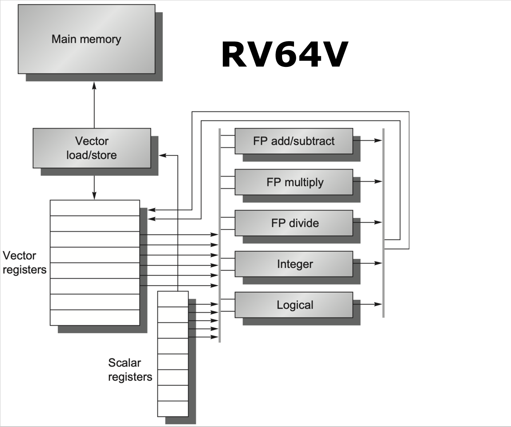
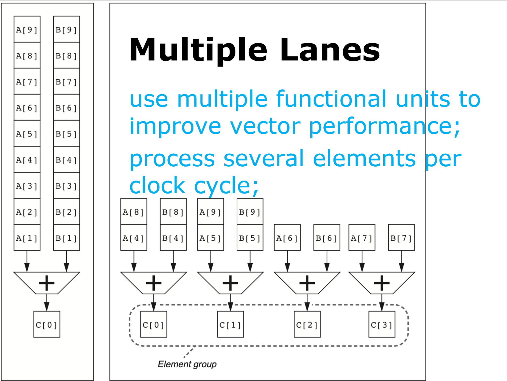
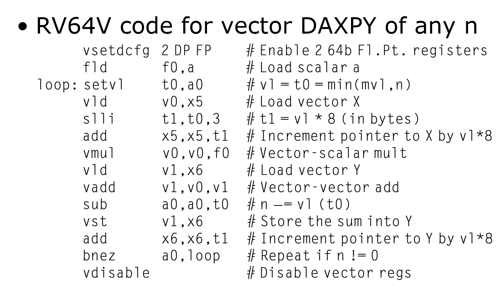
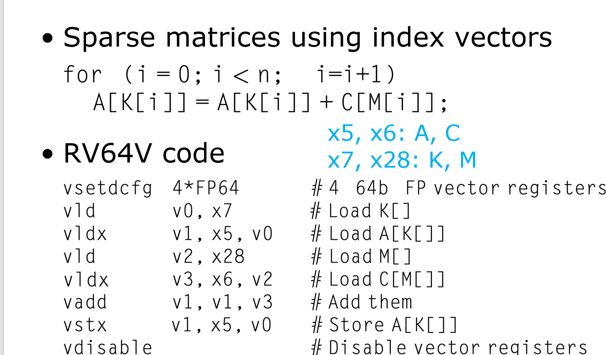

计算机体系结构4:数据级并行
什么是数据级并行？
首先，我们必须从根本上理解DLP与ILP的区别。
- 指令级并行 (ILP)：关注于在一个单一控制流中，找出并重叠执行不同的、独立的指令。例如，
a=b+c和d=e*f可以并行。它的并行粒度在单条指令层面。 - 数据级并行 (DLP)：关注于将同一条操作，同时施加在一个大型数据集（如数组、向量、矩阵）的多个元素上。例如，对于向量
A和B，操作A[i] = A[i] + B[i]对所有的i都是并行的。它的并行粒度在整个数据集层面。
利用DLP的设计哲学，带来了几个无与伦比的优势：
- 更高的能效：我们不再需要复杂的硬件去动态地检查每一对指令之间的依赖关系。取而代之的是，我们用一条指令来启动成百上千次相同的、但作用于不同数据的操作。控制开销被极大地摊薄了，能量主要消耗在真正的数据计算上。
- 更简洁的编程模型：相比于管理多个复杂线程（MIMD），程序员只需以数据集合（如向量）为单位来思考问题，代码逻辑更清晰，并行意图更明确，编程难度大大降低。
- 巨大的性能潜力：对于科学计算、图像声音处理、机器学习等天然具备DLP特性的应用，其性能提升可以是数量级的。
为了高效地利用DLP，体系结构的设计者们发展出了三大主流范式：向量体系结构（Vector Architecture）、多媒体SIMD扩展（Multimedia SIMD Extensions）以及图形处理器（GPU）。
第一部分：向量体系结构 (Vector Architecture)
向量体系结构的设计思想，源于上世纪70年代的超级计算机（如Cray-1）。它的核心是将处理器从一次处理一个“标量（Scalar）”数据，升级为一次处理一组被称为“向量（Vector）”的数据。
1.1 向量架构的核心设计思想
向量架构的运作模式，可以概括为四个步骤：
- Gather (收集)：从内存中抓取一组数据元素，这些元素在内存中可能是分散的。
- Load (加载)：将这些元素整齐地装入专用的、大容量的**向量寄存器（Vector Registers）**中。
- Operate (操作)：用一条向量指令，对向量寄存器中的所有元素执行计算。
- Store/Scatter (存储/发散)：将计算结果从向量寄存器中写回到内存，同样，目标位置也可能是分散的。

这张图展示了一个现代向量架构（以RISC-V Vector Extension "V" 为例）的核心组件。让我们来解构它的设计精髓：
-
向量寄存器 (Vector Registers)：
- 为什么需要？ 这是向量架构的灵魂。它们是超大容量的寄存器文件，每个寄存器可以容纳一个由多个数据元素（例如，64个双精度浮点数）组成的向量。
- 设计要点：
- 大容量：足以存放几十到几百个数据元素。
- 高带宽：为了在一个时钟周期内向功能单元“喂饱”多个数据，向量寄存器堆必须具备极高的读写带宽，例如拥有16个读端口和8个写端口，通过Crossbar Switch连接到功能单元。
- 与标量寄存器分离：系统同时拥有传统的标量寄存器（用于处理地址、循环计数等单个数据）和向量寄存器，各司其职。
-
向量化的功能单元 (Vector Functional Units)：
- 为什么需要？ 为了实现对向量中所有元素的高效处理。
- 设计要点）：
- 深度流水化：每个功能单元（如FP加法器、乘法器）都被设计成深度流水线。这意味着，一旦流水线被“填满”，它每个时钟周期都能产出一个结果。这使得处理一个64元素的向量加法，在启动延迟之后，只需要大约64个周期就能完成。
- 并行化（多通道 Lane）：为了进一步提升性能，一个向量功能单元内部可以包含多个并行的处理通道（Lane）。例如，一个4通道的向量加法器，每个时钟周期可以同时对4对元素进行计算，从而将处理整个向量的时间缩短为原来的1/4。 
-
向量加载/存储单元 (Vector Load/Store Unit)：
- 为什么需要？ 向量处理的瓶颈往往在于内存带宽。这个单元专门负责高效地在内存和向量寄存器之间传输数据。
- 设计要点：
- 深度流水化：支持连续的内存访问请求。
- 支持非连续访存：这是向量架构的一大优势。通过**跨步（Stride）和聚集-发散（Gather-Scatter）**机制，它可以高效地处理非连续存储的数据，例如矩阵的列、稀疏矩阵的非零元素等。
-
标量处理器 (Scalar Processor)：
- 为什么需要？ 程序中总有无法向量化的部分，例如复杂的控制流、地址计算、循环计数等。标量处理器负责执行这些“常规”指令，并为向量单元提供地址、配置等信息。
- 设计要点：标量寄存器（如RISC-V的x0-x31）可以直接作为向量指令的输入（例如，向量-标量乘法），或者用于计算向量访存的基地址。
1.2 向量指令集
向量架构的优雅之处，在于其简洁而强大的指令集。一条向量指令，就封装了整个循环的操作。
-
指令格式：向量指令通常采用类似于标量指令的格式，但其操作对象是向量寄存器。例如：
vadd.vv v3, v1, v2# Vector-Vector add: v3[i] = v1[i] + v2[i]vmul.vs v1, v0, f0# Vector-Scalar multiply: v1[i] = v0[i] * f0 -
DAXPY 示例对比： DAXPY (
Y = a*X + Y) 是一个经典的科学计算核心函数。-
标量 RISC-V 实现：
Loop: fld f1, 0(x5) ; Load X[i] fmul.d f1, f1, f0 ; a * X[i] fld f2, 0(x6) ; Load Y[i] fadd.d f2, f2, f1 ; a*X[i] + Y[i] fsd f2, 0(x6) ; Store Y[i] addi x5, x5, #8 ; Increment index addi x6, x6, #8 ; Increment index bne x28, x5, Loop ; Check if done这个循环体有8条指令，其中只有2条是真正的浮点计算，其余都是地址计算、加载/存储和循环控制的开销。并且，指令间充满了RAW数据相关，导致流水线频繁停顿。
-
向量 RV64V 实现：
vld v0, x5 ; Load vector X vmul.vs v1, v0, f0 ; Vector-scalar multiply a*X vld v2, x6 ; Load vector Y vadd.vv v3, v1, v2 ; Vector-vector add vst v3, x6 ; Store the sum设计之美：
- 无循环：整个循环被5条向量指令替代。循环控制的开销完全消失了。
- 依赖清晰：依赖关系只存在于向量指令之间，对整个向量生效，而不是元素之间。
- 停顿减少：流水线停顿只在向量操作的第一个元素上发生一次。一旦第一对元素的乘法结果出来，就可以立即送入加法器的流水线，这种无缝衔接被称为链接（Chaining）。Chaining 相当于向量处理器内部的“硬件级前向传播”，极大地隐藏了功能单元之间的延迟。
-
1.3 向量架构的高级特性
为了应对真实世界中复杂的编程场景，向量架构还引入了几个至关重要的特性。
1.3.1 向量长度控制：vl 与 mvl
- 问题：一个向量寄存器能容纳的最大元素个数（Maximum Vector Length,
mvl）是由硬件决定的（例如64个元素）。但程序中循环的次数（例如N=100）通常是可变的，并且不一定是mvl的整数倍。 - 解决方案：引入一个向量长度寄存器
vl。vl的值由程序员设置，它告诉硬件当前这条向量指令需要处理多少个元素。vl的值不能超过mvl。 - 分条开采 (Strip Mining)：这是一个由编译器自动完成的技术。对于一个大循环（N > mvl），编译器会生成一个外层循环。在每次外层循环中：
- 计算本轮需要处理的元素个数：
vl = min(N_remaining, mvl)。 - 执行向量指令对
vl个元素进行操作。 - 更新
N_remaining和数据指针。 - 重复，直到所有元素处理完毕。

这段代码完美地展示了
setvl指令如何与一个常规的标量循环结合，使得同一套向量指令可以处理任意长度的数据。
- 计算本轮需要处理的元素个数：
1.3.2 条件执行：向量掩码寄存器
- 问题：循环中经常包含
if语句，例如：我们只想对满足条件的元素执行操作。for (i=0; i<64; i++) if (X[i] != 0) X[i] = X[i] - Y[i]; - 解决方案：引入向量掩码寄存器（Vector-Mask Registers）或称谓词寄存器（Predicate Registers）。
- 这是一个位向量，长度与向量寄存器相同。
- 工作流程：
- 先执行一条向量比较指令，生成掩码。例如
vpne p0, v0, f0，它会比较向量v0(X) 的每个元素是否不等于f0(0)，并将结果（1或0）存入掩码寄存器p0。 - 然后，在掩码的控制下执行计算指令。例如
vsub.vv v0, v0, v1，硬件会自动检查掩码寄存器p0，只对p0[i]为 1 的那些元素i执行减法操作。p0[i]为 0 的元素在目标向量寄存器v0中保持不变。
- 先执行一条向量比较指令，生成掩码。例如
- 设计优势：这种技术被称为IF-Conversion，它将带有分支的复杂控制流，转换成了没有分支的、直线型的向量代码。这避免了传统分支预测可能带来的巨大开销，因为在DLP模型中，一次分支预测失败可能意味着整个流水线中数百个并行操作被冲刷。
1.3.3 内存系统支持：跨步与聚集-发散
- 问题：DLP应用中，需要处理的数据在内存中并非总是连续存放的。
- 跨步 (Stride)：处理多维数组的某一列或某个对角线。相邻元素在内存中的地址间隔是一个固定的值（stride）。
- 聚集-发散 (Gather-Scatter)：处理稀疏矩阵。非零元素的位置是完全不规则的，需要一个额外的索引数组来指明它们的位置。
- 解决方案：提供专门的硬件支持。
- 跨步加载/存储：
vlds和vsts指令允许程序员指定一个步长，硬件会自动计算每个元素的内存地址。 - 聚集加载 (Gather)：
vldx指令使用一个向量寄存器作为索引向量，从多个不连续的内存地址中“聚集”数据到一个密集的向量寄存器中。 - 发散存储 (Scatter)：
vstx指令则执行相反的操作，将一个密集向量寄存器中的元素，根据索引向量，“发散”地存储到内存的各个位置。  这段代码展示了如何使用vldx和vstx来高效处理稀疏矩阵的A[K[i]] = A[K[i]] + C[M[i]]操作，这在传统标量处理器上是极其低效的。
- 跨步加载/存储：
1.4 性能分析
- 护航队 (Convoy)：一组可以同时开始执行的向量指令。一个护航队中不能有结构相关（例如，不能有两条
vld指令，因为通常只有一个Load/Store单元），但可以有数据相关（通过Chaining解决）。 - 钟鸣 (Chime)：执行一个护航队所需要的时间。在一个理想的、拥有无限硬件资源（每个功能单元都有）的模型里，一个chime的时间约等于向量长度
vl。 - 性能计算：总执行时间 $\approx$ Chimes 数量 $\times$ 平均向量长度。
m个护航队（即m个 chimes）处理长度为n的向量，总时间约为 $m \times n$ 个周期。